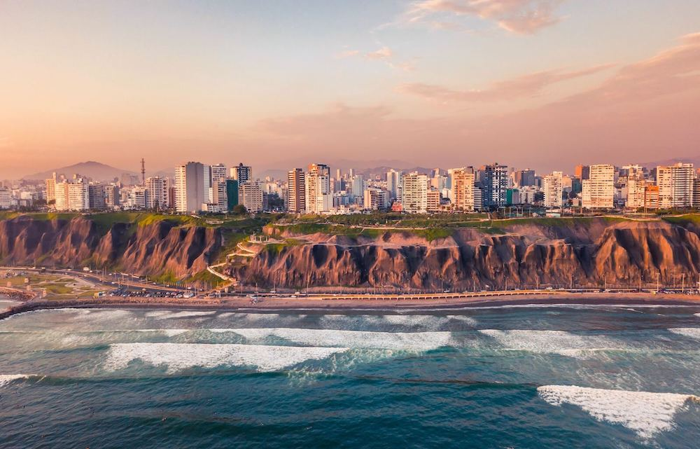
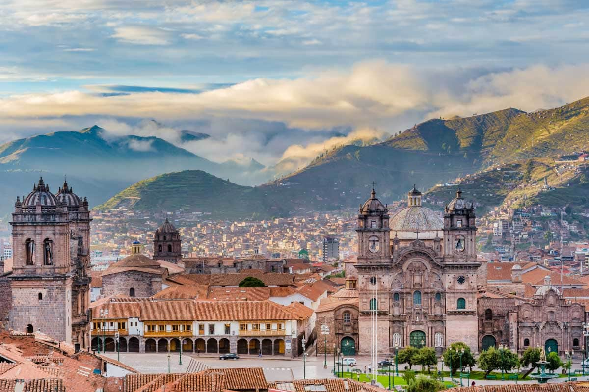
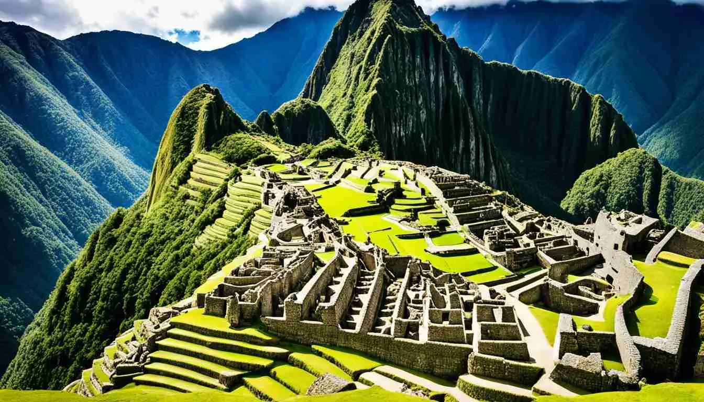
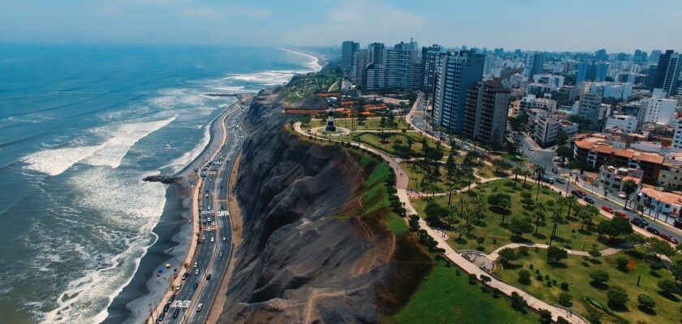
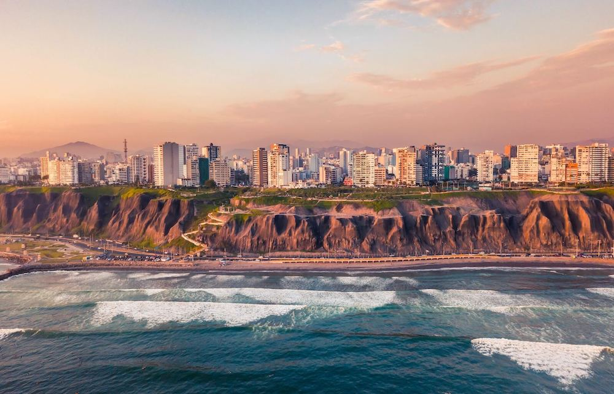
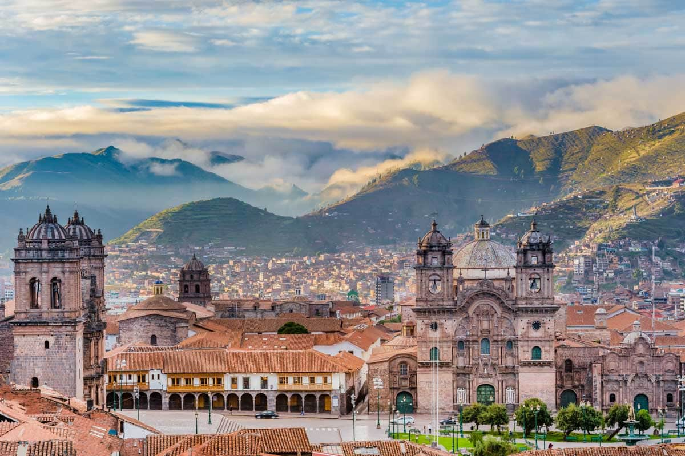
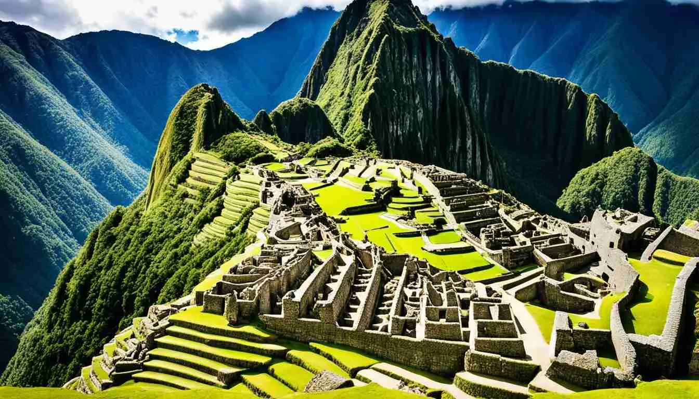
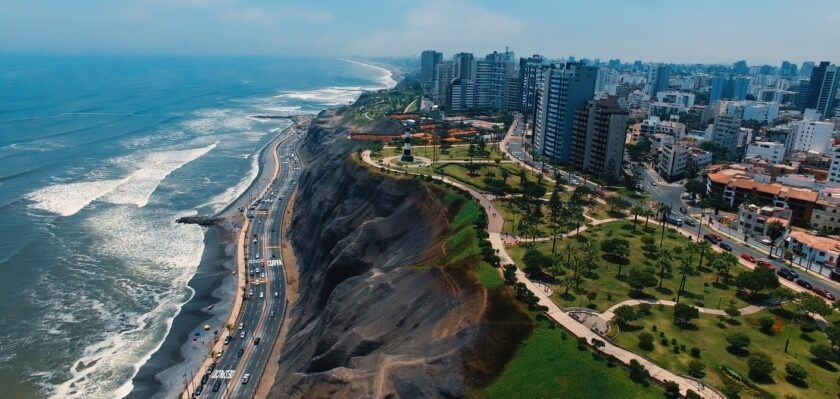

Peru, officially the Republic of Peru, is a country in western South America. It is bordered in the north by Ecuador and Colombia, in the east by Brazil, in the southeast by Bolivia, in the south by Chile, and in the south and west by the Pacific Ocean. Peru is a megadiverse country, with habitats ranging from the arid plains of the Pacific coastal region in the west, to the peaks of the Andes mountains extending from the north to the southeast of the country, to the tropical Amazon basin rainforest in the east with the Amazon River. Peru has a population of over 32 million, and its capital and largest city is Lima. At 1,285,216 km2 (496,225 sq mi), Peru is the 19th largest country in the world, and the third largest in South America. Peruvian territory was home to several cultures during the ancient and medieval periods, and has one of the longest histories of civilization of any country, tracing its heritage back to the 10th millennium BCE. Notable pre-colonial cultures and civilizations include the Caral–Supe civilization (the earliest civilization in the Americas and considered one of the cradles of civilization), the Nazca culture, the Wari and Tiwanaku empires, the Kingdom of Cusco, and the Inca Empire, the largest known state in the pre-Columbian Americas. The Spanish Empire conquered the region in the 16th century and Charles V established a viceroyalty with the official name of the Kingdom of Peru that encompassed most of its South American territories, with its capital in Lima. Higher education started in the Americas with the official establishment of the National University of San Marcos in Lima in 1551.
 






